L'opéra sydney est l'un des célèbres batiments du XXe siecles et un haut lieu de représentation des arts notamment lyriques. Son architecture originale qui ressemble à un voilier pour les uns, ou à un coquillage pour les autres, a été imaginée par le Danois Jorn Utzon.
L’opéra de Sydney, à Sydney, est l'un des plus célèbres bâtiments du XXᵉ siècle et un haut-lieu de représentation des arts notamment lyriques. Son architecture originale, qui ressemble à un voilier pour les uns, ou à un coquillage pour les autres, a été imaginée par le Danois Jørn Utzon
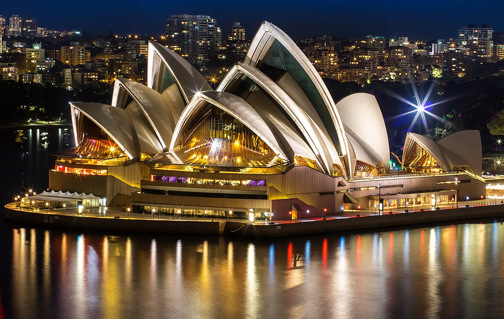 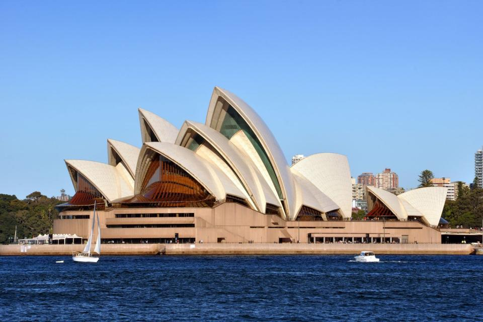 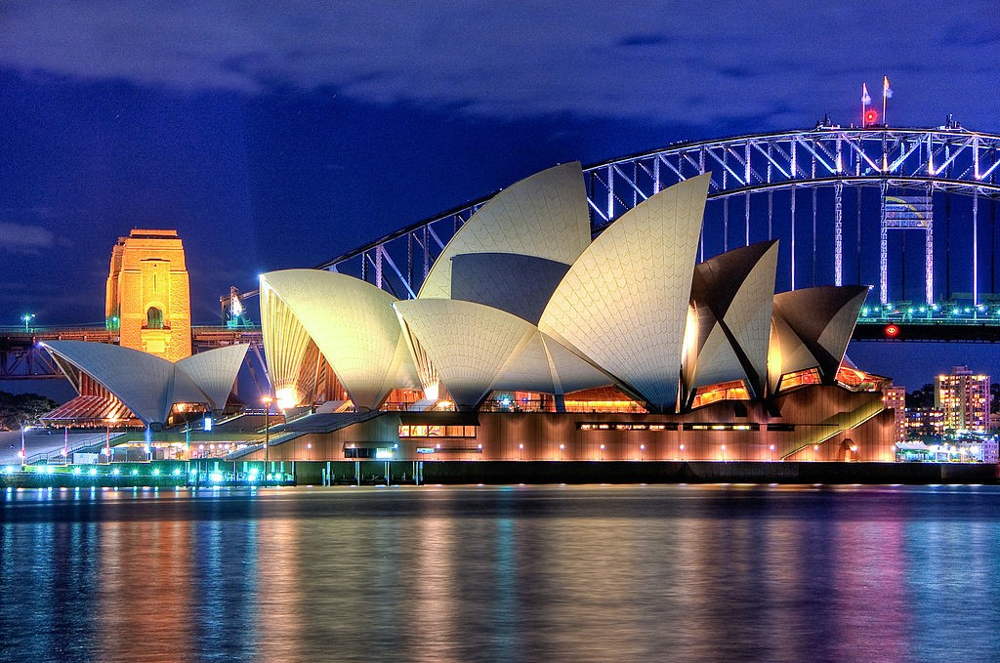 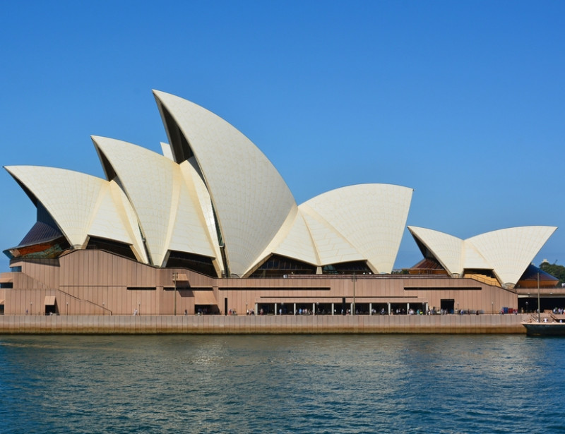 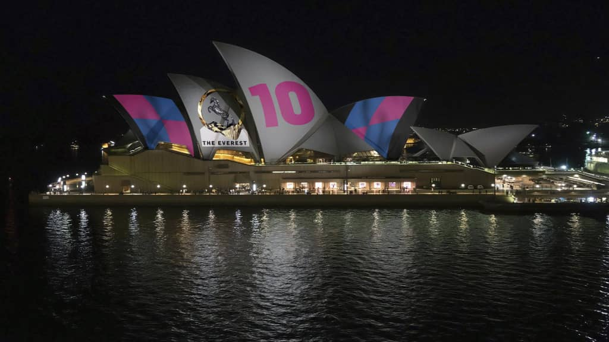L'Opéra de Sydney, un lieu des arts de la scène de classe mondiale et un monument emblématique de l'Australie, définit le port de Sydney au cœur de la ville. Conçue par l'architecte danois Jorn Utzon, la structure est un chef-d'œuvre de l'architecture de la fin du XXe siècle, malgré les défis qui ont tourmenté le projet de 15 ans avant son ouverture officielle par la reine Elizabeth II en 1973. extérieur conçu pour évoquer les voiles d'un yacht, ce site classé au patrimoine mondial de l'UNESCO est une attraction incontournable de Sydney.
Certains y voient un voilier. D’autres, des coquillages qui s’entremêlent. L’opéra de Sydney trône, majestueux, surplombant la baie. Avec le kangourou, le monument fait partie des symboles de l’Australie, fierté des Australiens. Malgré sa terrible acoustique, il est l’un des bâtiments les plus célèbres du XXe siècle. Son emplacement et son architecture en font un lieu unique au monde. Son histoire est aussi complexe que sa construction. Il est devenu le cauchemar de son concepteur. Pourtant, tout a commencé par un rêve un peu fou. Retour sur cette histoire incroyable.
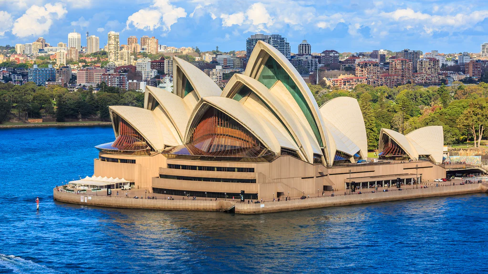 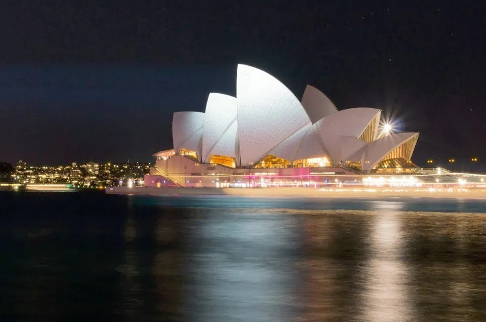 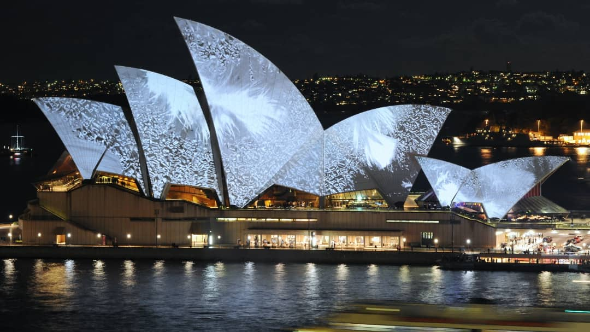 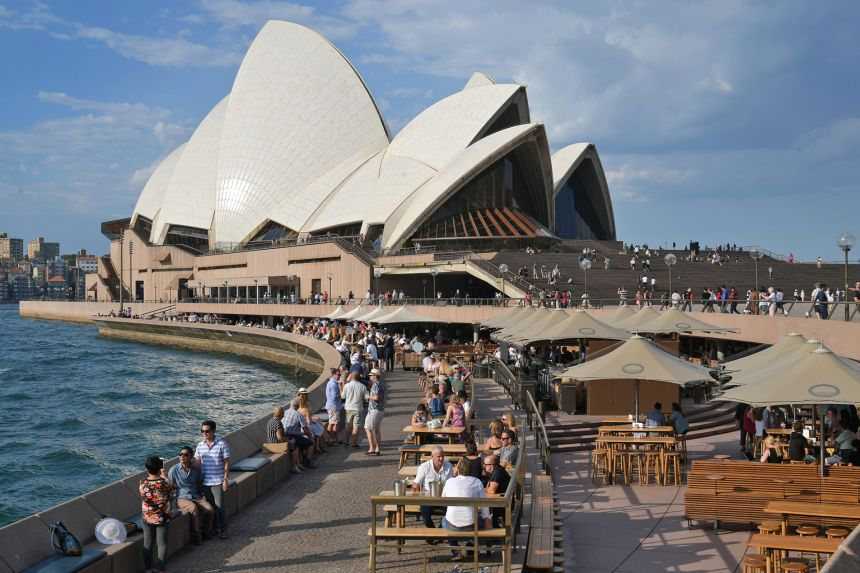 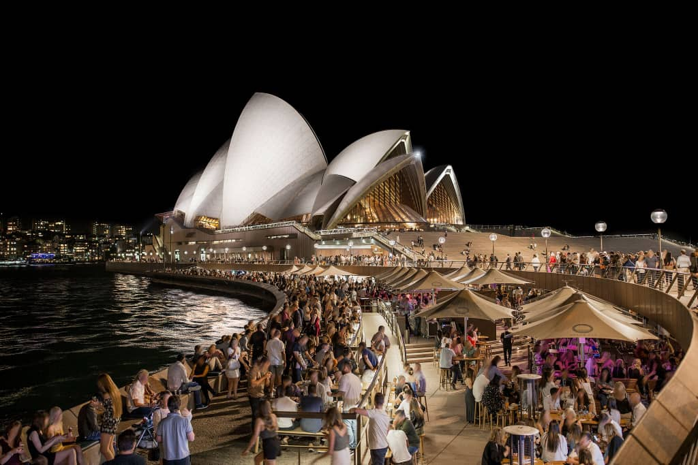Situé dans le port de Sydney (l'endroit précis s'appelle Bennelong Point), il est entouré d'un parc boisé au sud et est voisin du Harbour Bridge (célèbre pont de Sydney constitué d'une seule arche). Le paysage qui en résulte est d'ailleurs devenu un symbole de l'Australie, et de Sydney tout particulièrement. L'opéra est aujourd'hui une attraction touristique majeure de la ville bien que la plupart des visiteurs n'ont pas l'occasion d'assister à une représentation.
C'est la forme de l'Opéra qui fait particulièrement son originalité et sa notoriété. Elle s'organise principalement en deux séries de trois grands « coquillages » qui se recouvrent partiellement les uns les autres
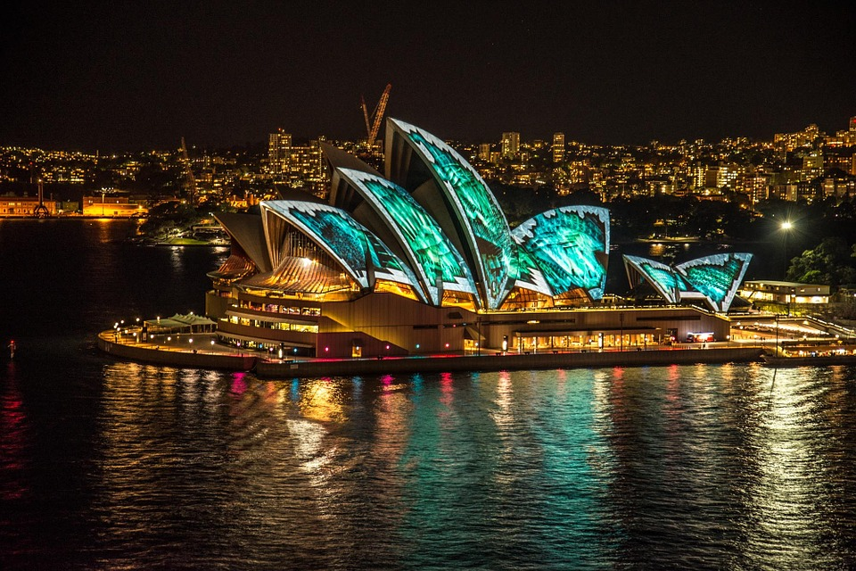 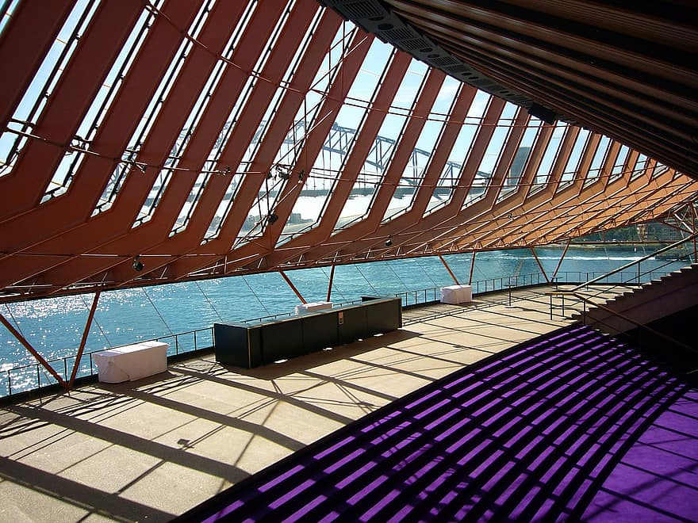 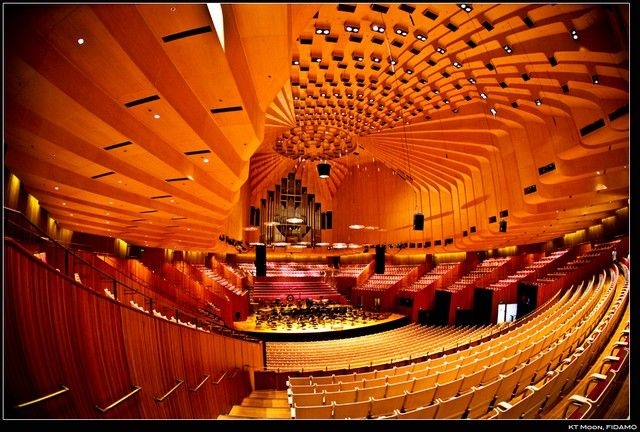 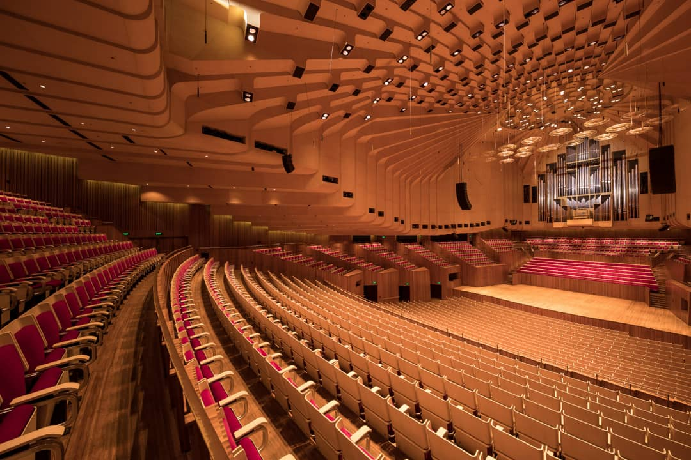 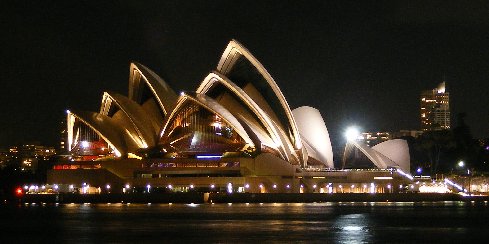La décoration intérieure, quant à elle, est assurée par du granit rose, extrait des carrières de Tarana (Nouvelle-Galles du Sud).